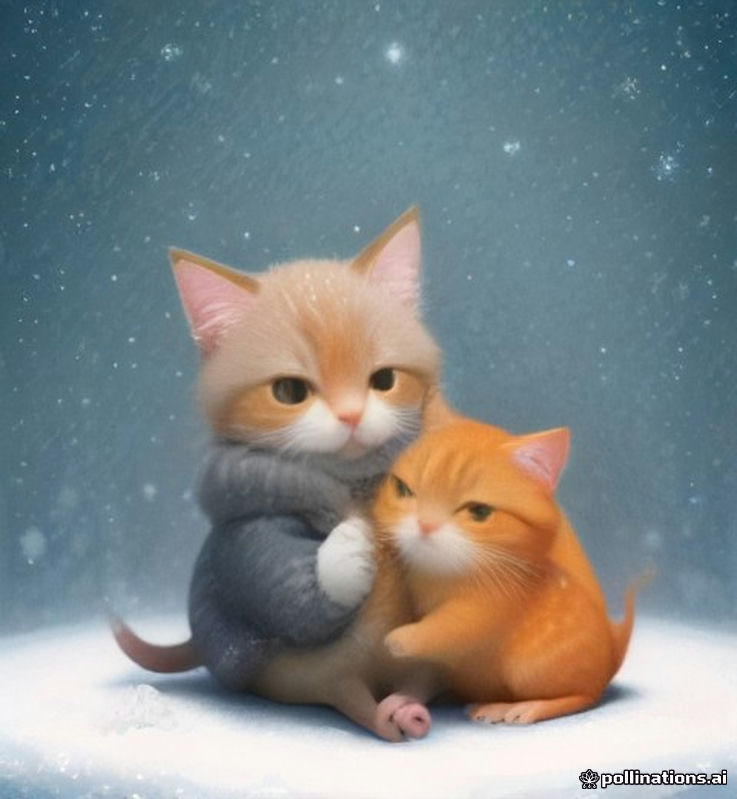
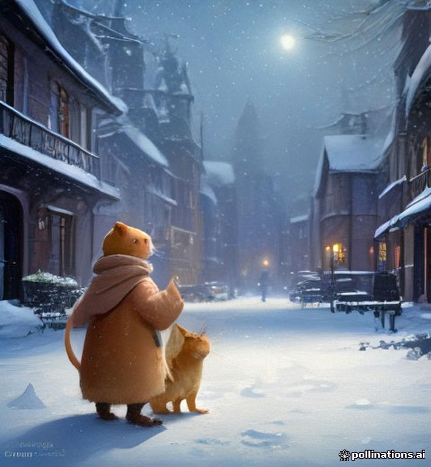
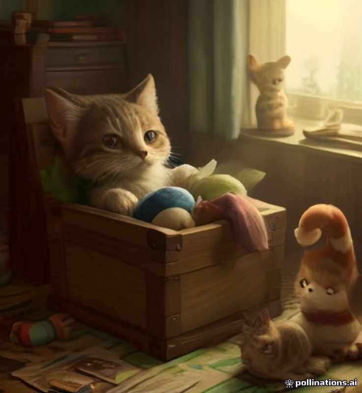
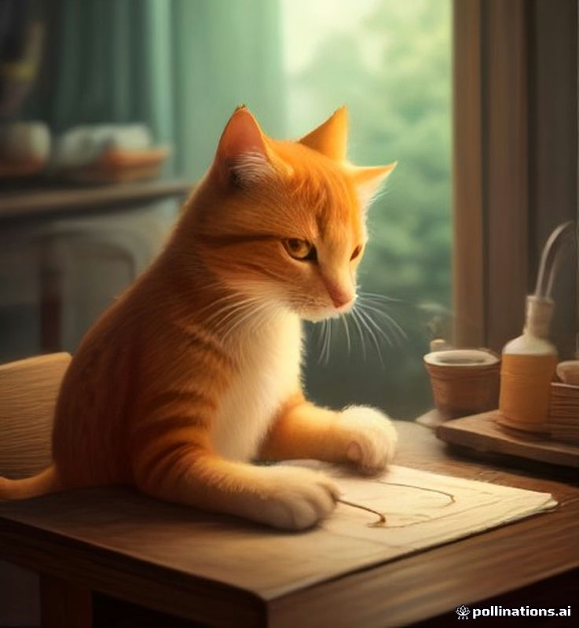
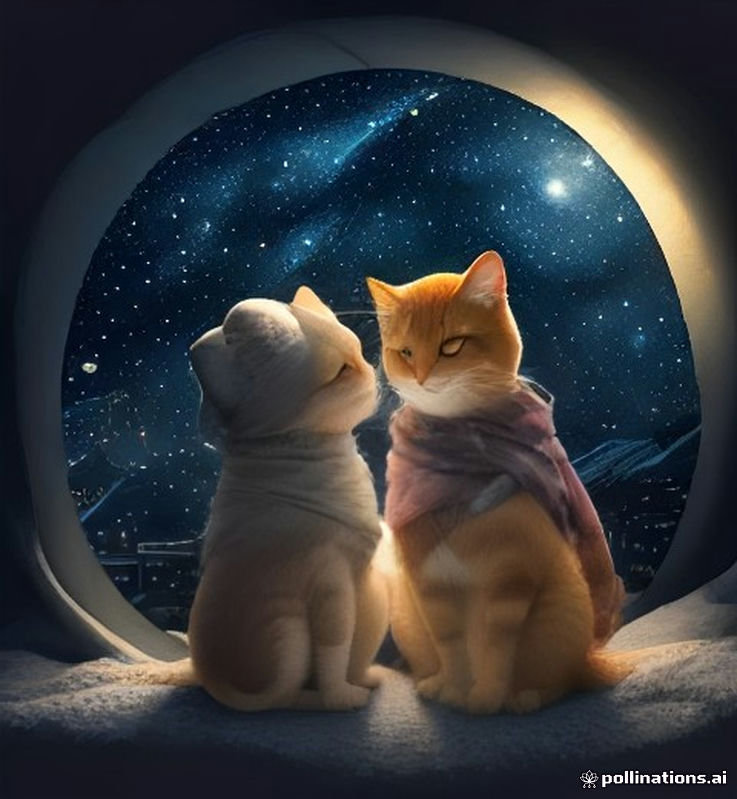

A heartwarming tale of a cat, a mouse, and the smallest piece of knitting in Loki's Town.

The winter wind whistled through the cobblestone streets of Loki’s Town, turning the puddles into thin sheets of glass. I pulled my teal scarf tight, but then I felt a tiny tremble on top of my head. It was Pip! My little mouse friend was shivering, his whiskers twitching in the cold. Even though he has fur, the frost was much too bold for a mouse of his size. 'Don't worry, Pip,' I meowed softly. 'I shall make you something to keep your ears as warm as a fresh loaf from the bakery.'

We hurried into my workshop, where the air smelled of cedar shavings and old paper. I searched through my treasure chests for the perfect hat material. First, I found an old striped sock, but it was big enough to be a sleeping bag for Pip! Then, I tried a polished acorn cap, but it was much too hard and clattered against his ears. Pip squeaked and shook his head. We needed something soft, something snug, and something that looked just right for a brave town explorer.

In the very corner of my sewing basket, I found a leftover strand of teal wool—the exact same color as my favorite scarf. It was just a scrap to me, but to Pip, it was a mountain of softness. I took two sturdy toothpicks and began to knit. My paws are big, so I had to be very careful not to drop a single stitch. Loop over, pull through, and tuck. Slowly, a tiny, round shape began to form. Pip watched from the workbench, his black eyes wide with wonder.

With a final knot and a tiny pom-pom made of white fluff, the hat was finished. I carefully lifted it and placed it right between Pip’s ears. It fit perfectly! Pip did a happy little dance on my head, his new teal hat matching my scarf exactly. We walked back out into the chilly night, but neither of us felt the cold anymore. The stars were bright, the town was quiet, and my best friend’s ears were finally toasty. Making things is good, but making things for friends is better.